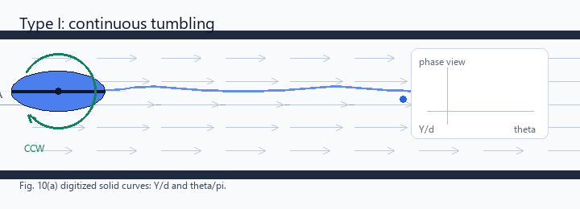
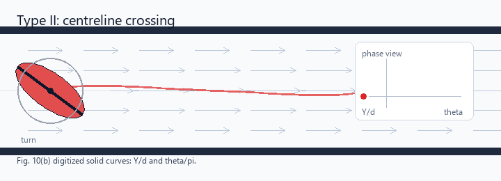
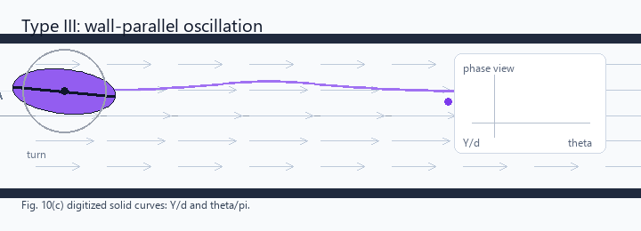
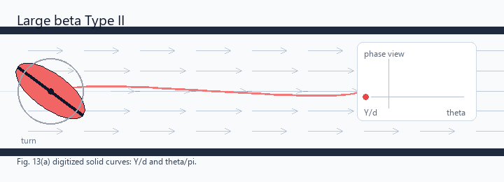
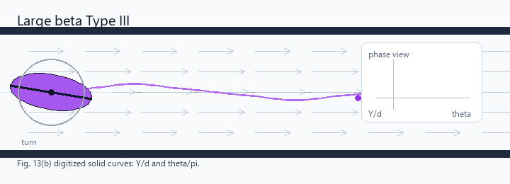

Type I：连续同向翻滚
Y/d 始终不为零，颗粒一直待在中心线同一侧；椭圆柱持续向同一方向翻滚，类似 Jeffery 翻滚运动。
这些动画使用 Figure 10 和 Figure 13 中实线曲线的近似数字化数据驱动。重点看三个判据：
横向位置 Y/d 是否穿过中心线、角速度是否换号、长轴是否近似平行通道壁。

Y/d 始终不为零，颗粒一直待在中心线同一侧；椭圆柱持续向同一方向翻滚，类似 Jeffery 翻滚运动。

颗粒靠近中心线，每半个周期穿过 Y/d = 0；穿线时角速度换号，所以姿态是来回摆动，不是持续翻滚。

颗粒远离中心线，横向位置和角度都只做小幅振荡；长轴大部分时间几乎平行通道壁。
对应论文 Figure 12、13 中 α = 2, β = 0.4 的相图拓扑。此时相平面中只剩
Type II 与 Type III。需要特别注意：这里的 Type III 不等同于小 β 时的近壁小幅环；
它也可以从通道一侧移动到另一侧，并在每半周期改变旋转方向。

围绕 (Y/d, θ) = (0, ±π/2) 附近的闭合轨道。横向位移过中心线，姿态摆动幅度较明显，角速度每半周期换号。

围绕 (Y/d, θ) = (0, 0) 或 (0, ±π) 附近的闭合轨道。长轴几乎平行壁面，但横向位置仍可穿过中心线。
图中虚线是通道中心线，浅色箭头表示 Poiseuille 流速剖面；右侧小窗给出由数字化曲线得到的
(theta, Y/d) 相图轨迹。数据文件：
digitized/figure_curve_anchors.csv 与
digitized/figure_curve_samples.csv。叠加检查图：
digitized/fig10_digitized_overlay.png、
digitized/fig13_digitized_overlay.png。
重新生成数据和 GIF 可运行：
python particle_swinging/motion_demos/digitize_figure_curves.py，
python particle_swinging/motion_demos/generate_motion_demos.py。